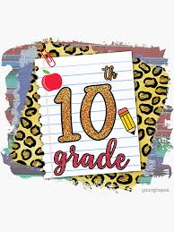

Matemática:
Álgebra, geometría, trigonometría, funciones, estadística y probabilidad. Se incluyen ecuaciones cuadráticas, funciones trigonométricas, geometría analítica y más.
Lengua y Literatura:
Estudio de géneros literarios como narrativa, drama y poesía. Análisis de textos, escritura creativa y expresión oral y escrita.
Estudios Sociales:
Historia del Ecuador (precolombina, colonial, republicana, contemporánea), geografía y aspectos económicos y sociales del país.
Otras áreas:
Ciencias Naturales, Educación Física y Educación Ciudadana, según la institución educativa. 